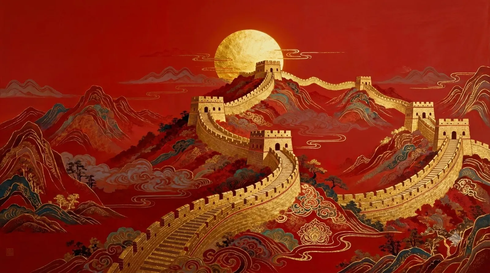

京A Chinese class project
Beijing
Walk the capital with twelve anime teachers. Scroll, and each one shows you their special move.
A. ANTONY BESCKIRA2611026010076
京A Chinese class project
Walk the capital with twelve anime teachers. Scroll, and each one shows you their special move.
A. ANTONY BESCKIRA2611026010076
01欢迎Welcome
01Places and visiting
One of the largest public squares in the world. The flag is raised at sunrise.
A busy shopping street with a snack lane and old department stores.
Modern shops, cafés and nightlife close to many embassies.
Called China's Silicon Valley, with top universities and tech firms.
Famous for its giant pandas.
02长城Great Wall
02Places and visiting
The most famous section, with restored Ming walls. Very busy, about 70 km away.
Green hills, a cable car and a toboggan ride down. Quieter than Badaling.
Wilder walls and many watchtowers. The best section for a long hike.
Steep and dramatic, with lake views.
A mountain pass fortress, the section closest to the city.
03故宫Forbidden City
03Places and visiting
The grand south entrance, used for great ceremonies.
The largest hall, used for coronations and big ceremonies.
A main palace of the emperors' inner court.
A small garden with old cypress trees and rock hills at the north end.
The north exit. Cross the road to Jingshan Park for the classic view.
04天坛Temple of Heaven
04Places and visiting
The famous round blue-roofed hall on a three-tier marble base.
Its Echo Wall can carry a whisper around the circle.
Where emperors made offerings at the winter solstice.
A raised stone path that joins the altar to the hall.
Where locals play cards, sing and dance in the morning.
05胡同Hutongs
05Places and visiting
A lively lane of snacks, shops and tiny cafés. Best on a weekday.
Connected lakes with bars, boats and winter ice skating.
The "tobacco pipe" lane, a short old street leading to the lake.
Old city timekeepers. Climb the Drum Tower for a view over the roofs.
A quieter lane of design shops, cafés and small theatres.
06美食Food
06Places and visiting
A famous roast duck restaurant, open since 1864.
Another old duck house, said to date from 1416.
Classic hotpot with thin-sliced mutton, since 1903.
Skewers, candied fruit and dumplings in one busy lane.
The "Ghost Street", open late for spicy crayfish and hotpot.
07现代Modern Beijing
07Places and visiting
At 528 metres, the tallest tower in Beijing. Its shape echoes an ancient wine vessel.
The looping tower nicknamed the "Big Pants", designed by OMA.
The stadium and swimming arena built for the 2008 Olympics.
Old factories turned into galleries, studios and cafés.
Opened in 2019, designed by Zaha Hadid Architects.
08交通Transit
08Places and visiting
The Airport Express train reaches the city in about 20 minutes.
Starfish-shaped, with a fast express rail to the city.
High-speed trains to Shanghai, Tianjin and many cities leave from here.
Trains toward the west and south-west.
Runs under Chang'an Avenue past Tiananmen and Wangfujing.
09公园Parks and Hills
09Places and visiting
Hills with red maple and smoke-tree leaves in autumn.
A lake, a hill, a long painted corridor and a marble boat. Plan half a day.
An old imperial lake garden with a white pagoda on an island.
Thirteen emperors rest here. Dingling has an underground palace.
A hill behind the Forbidden City with a famous roof view.
10中文Language
10Words for places
cèsuǒ. Ask: "Cèsuǒ zài nǎr?"
dìtiězhàn
jīchǎng
jiǔdiàn
hǎochī. Say it to the cook!
11四季Seasons and Festivals
11Where to go by season
Cherry blossoms at Yuyuantan Park, late March to April.
Lotus flowers at Beihai Park and boats on the Houhai lakes.
Red leaves at Fragrant Hills and golden ginkgo at Ditan Park.
Skate on the frozen Houhai or Beihai lakes.
Temple fairs at Ditan and Longtan Park, with snacks and lanterns.
12三日Three Days
12The route
Tiananmen Square, the Forbidden City, Jingshan Park and Wangfujing.
Mutianyu Great Wall, then the Olympic Park lit up at night.
Temple of Heaven at dawn, the hutongs, then Peking duck for dinner.
The Summer Palace or Beihai Park.
Near Wangfujing or the hutongs, so you can walk to many sights.
That was the whole road, from the Great Wall to the hutongs. Take the travel guide with you, with every chapter, map and checklist in one PDF.
A. ANTONY BESCKI · Reg. No. RA2611026010076 · Chinese project-based learning
The paintings and photographs were made with AI tools. The anime characters and voice clips belong to their original creators and are used only for this school project. The page was built with an AI assistant from my directions. Facts are being checked against reliable sources.

Turn the volume up and switch the silent switch off. After you tap, every teacher performs their move and speaks by themselves as you scroll.